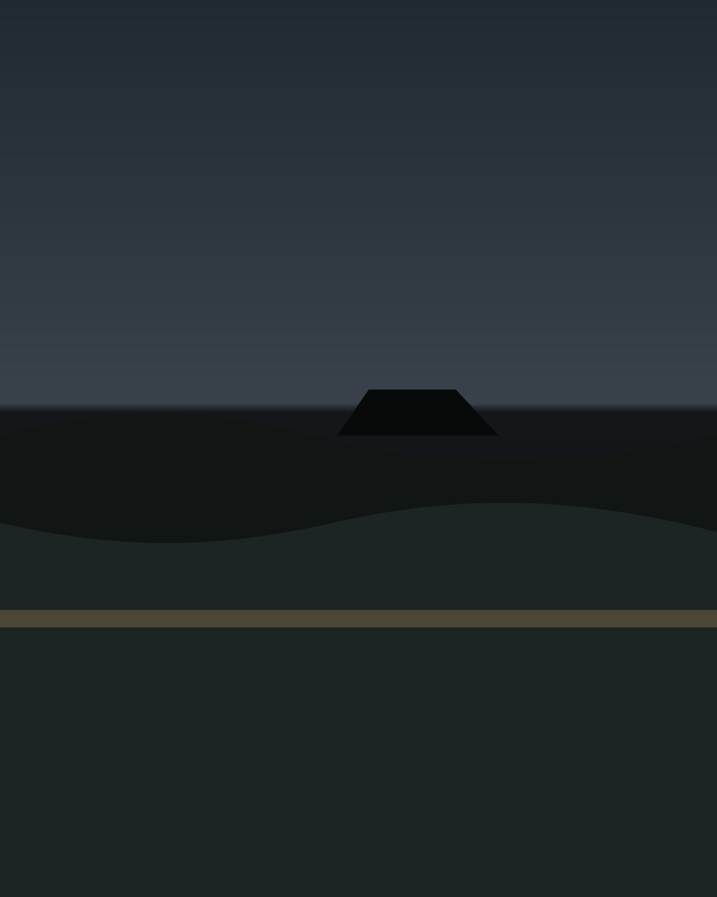

Field Notes in Light
Replace this text with a short artist statement, biography, print availability note, or contact details. The template keeps the page quiet and image-led.

Artist Statement
This portfolio is structured for slow looking: large image surfaces, minimal labels, and no social clutter. It is suitable for landscape, wildlife, travel, and fine art photographers who want the work to feel spacious.
Use the gallery pages as a starting point, replace the placeholder files in assets/images/, and update the image data inside each gallery HTML file with titles, descriptions, preview files, and full-resolution links.